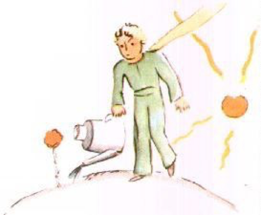

7장
다섯 째 날, 항상 양 덕분에, 어린 왕자의 비밀을 내가 하나 더 알게 되었지. 길게 생각해보더니 불쑥 약간 퉁명스런 말투로 서론 빼고 다짜고짜 묻더군. "작은 나무를 먹는다면, 그럼 양들이 꽃들도 먹나요?" "그야 마주치면 먹겠지." "심지어 꽃에 가시가 있어도요?" "그래, 꽃에 가시가 있어도 말이다." "그럼 가시는 뭐하려고 있는 건데요?" 난 알지 못했지. 지금 엔진에 꼭 낀 볼트를 푸느라 여념이 없었거든. 비행기 고장이 애초 생각보다 심각했던 지라 점점 무게감으로 다가왔고 무엇보다 목의 갈증은 더해가는데 마실 물도 다 떨어져 가고 있었기 때문이야. "그럼 가시는 뭐하려 있냐고요?" 어린 왕자는 내게 한 번 묻고 나면 포기하는 법이 없었어. 그치만 난 지금 볼트를 푸느라 그런 게 귀에 와 닿지도 않았지. "가시야 쓸모없지. 그건 꽃들이 짖궃어서니까!" "아!"
잠깐의 침묵 후 그 애가 일종의 적의까지 담아 내게 말하더구나. "못 믿겠어요! 꽃들은 약해요. 순수하다고요. 그런 자신을 지킬 게, 그 애들이 생각하기에 무서운 가시밖에 없는 거예요..." 난 대답하지 않았어. 그냥 내 일에만 파묻혀 있고 싶었을 뿐이야. "이 볼트가 여간 단단하지 않은데. 아무래도 망치로 때려서라도 풀어야겠어." 그때 어린 왕자가 또 나를 방해하더구나. "아저씨도 꽃들이 그렇다고 생각하세요..." "아니! 아니! 아니란다! 그냥 대답한 거야. 난 지금 바쁘잖니!" 그 앤 어리벙벙한 표정을 지었어. "바쁘다고요!" 손에 망치를 들고서 내 손가락에 묻어 반짝이는 시꺼먼 기름들을 보면서, 더구나 뭔가 엄청 못생긴 물체에 몸을 숙이며 들여다보고 있는 나를 보면서 그 애가 말하더군. "어른들처럼 말하시는군요!" 이 부분에서 나도 살짝 놀랐단다. 그치만 그 앤 무자비하게 이렇게까지 덧붙이더구나. "제 말을 혼동하고 계세요... 뒤죽박죽이라고요!" 그 앤 정말 화가 나 있었어. 그 애의 머릿결이 바람에 나부끼는 게 보였을 정도니까. "빨간 신사가 살던 별을 알아요. 그는 절대 꽃 향기를 맡은 적이 없데요. 결코 별을 본 적이 없었으니까요. 누군가를 사랑한 적도 없었고요. 손 하나 까딱 하지 않았죠. 매일 같이 아저씨처럼 말할 뿐이었데요. '난 바쁜 사람이다! 정말 바빠!' 저는 그를 자만으로 부풀게 만들었어요. 그게 뭔 줄 아세요, 그는 사람이 아니에요, 버섯이라고요!" "뭐?" "버섯이요!"
어린 왕자는 분노로 창백해져 있었어. "수백만 년 전부터 꽃들은 가시를 만들어 왔어요. 수백만 년 전부터 양들은 꽃들을 먹어 왔고요. 그런데 꽃들이 가시를 왜 만드는지 중요치 않다고요? 양들과 꽃들의 전쟁이 중요치 않다고요? 이건 큰 시뻘건 신사가 하나 더 느는 것보다 더 심각하고 중요한 문제라고요. 만약 제가 세상에 단 하나 뿐인 꽃을 안다면, 제 별에만 딱 하나 있는 그 꽃이요, 그럼 그걸 작은 양이 하루 아침에 먹을 수도 있는데, 그게 중요치 않다고요!”

얼굴까지 붉히며 그 애가 말을 이어갔어. "수백 수 만의 별들 중에서도 딱 하나 밖에 없는 꽃을 사랑하는 이는 별들을 보는 것만으로 행복을 느낄 수 있어요." 그 애가 혼자 말했어. "제 꽃도 그 어딘가에 있... 하지만 만약 양이 그 꽃을 먹는다면, 그럼 그 애에겐 모든 별들이 사라지는 것과 같을 거고! 그런데도 중요하지 않다고요!" 그 아인 더는 말하지 않았지. 순간 그 애가 눈물을 왈칵 쏟았어.
깊은 밤이었지. 이 부분에서 난 도구를 놓았단다. 내 기분은 지금 망치와 볼트와 목마름과 죽음의 두려움 탓에 뒤죽박죽이 되어 있었던 거야. 별들, 유성, 나, 그리고 지구와 이토록 어린 왕자, 위로해야 한다! 난 이 애를 지금 안아 주어야 한다, 그 뿐이었어. 그렇게 그 애를 토닥여주었지 이렇게 말해주면서. "네가 사랑하는 꽃은 안전하단다... 네 양들에게 입마개를 그려 주마... 네 꽃들에게 갑옷도 그려주고... 내가..." 무슨 말을 해주어야 할지 떠오르지 않았어. 그저 내가 서툴단 생각이 들 뿐이었지. 손을 뻗어 닿을 곳을 모르는 가운데... 눈물에 의해 정화되는 이 신비로움이란!
8장
나는 곧 그 꽃에 대해 알게 되었어. 어린 왕자의 별엔 단순한 꽃들만 늘 있었데. 꽃잎이 하나 뿐인, 꽃방이 없는 꽃들이 누구의 방해도 받지 않은 채 지내고 있었데. 꽃들은 아침이면 풀 속에서 고개를 내밀었고 저녁이면 지었지. 하지만 어느 날 어디에서 왔는지 이름 모를 씨앗 하나가 싹을 텄데. 어린 왕자는 그 잔가지가 다른 꽃들과 닮지 않은 걸 예의 주시하며 지켜보았지. 횡여 바오밥나무 일수도 있으니까 말이야. 그치만 그 작은 나무는 곧 성장을 멈추고 꽃이 될 준비에 마쳤데. 꽃이 피려는 걸 지켜보던 어린 왕자는 뭔가 경이로움이 일어날 거란 걸 느꼈데. 그치만 아름다움을 ‘채 마쳐’(마저 다) 준비하지 못한 꽃은 마냥 푸른 꽃방 속에서 피난처를 구할 뿐이었데. 그러면서도 꽃은 세심하게 자신의 색깔을 선택해나갔지. 천천히 옷을 입더니 꽃잎을 하나씩 형성해나갔지. 꽃은 흔한 양귀비마냥은 태어나지 않으려는 듯 보였어. 아름다움이란 찬란한 광채 속에서 홀로 태어나고 싶은 듯 보였데. 그래 그랬데!
그 꽃은 아주 요염한 꽃이었던 거야! 신비로운 옷을 걸친 채 그렇게 며칠이 또 지났지. 그러던 어느 날 아침, 해가 떠오를 무렵에, 그 꽃은 모습을 드러냈데.

아주 까다롭게 이 일을 다 마친 그 꽃은 한가하다는 듯 하품을 하며 말했데. "아! 막 일어났어요... 죄송해요... 옷차림이 좀 흩뜨려졌죠..." 어린 왕자로선 감탄을 금할 수 없었데. "정말 아름다워!" "그야 뭐,"라며 꽃이 조용히 말했데. "저 태양과 동시에 태어났으니까요..." 어린 왕자는 꽃이 겸손하지 않다는 걸 예측할 수 있었지, 그치만 그녀는 그 자체로 이미 너무도 감동이었어!
"시간이, 제 생각에, 아침 먹을 때쯤 돼지 않았나요,"라며 꽃이 또 덧붙였데. "제게 친절을 배풀어 주시지 않겠어요?”
그래서 어린 왕자는 잔뜩 혼동스런 가운데서도 퍼득 정신을 차리고 신선한 물을 물뿌리개에 담아 꽃에게 (물을) 주었데. 그렇게 꽃은 어린 왕자의 다소 그늘진 허영심을 자극하며 고통을 주는 법을 알게 되었던 거야. 예를 들면, 어느 날, 꽃의 네(4개) 가시들에 대해 언급하며, 꽃이 어린 왕자에게 이렇게 말했던 거야. "발톱을 가진, 호랑이들이, 올 수도 있잖아요."
"우리 별엔 호랑이가 없는 걸,"라며 어린 왕자가 이의를 제시했지. "게다가 호랑이들은 풀을 먹지 않잖니." "전 풀이 아니에요."라며 꽃은 상냥히 대답했다. "아 실례..." "전 호랑이가 와도 두렵지 않아요, 그치만 바람은 싫어요. 혹시 바람막이 가지고 계신가요?"
"바람은 끔찍해요... 식물에게 좋은 게 아니라고요." 그제야 어린 왕자는 낌새챘지. 이 꽃이 여간 복잡한 게 아니란 것을 말이야... "저녁엔 제게 유리 덮개를 씌어주세요. 여긴 너무 추워요. 몹시도. 제가 온 곳에선...”

하지만 그 꽃은 말을 채 끝맽질 못했지. 씨앗 상태로 여길 왔으니. 그녀로선 자신이 어디서 온 건지 감도 잡을 수 없었던 거지. 그런 순진한 거짓말이 통할 거라 생각한 그녀 자신이 스스로에게 무척이나 굴욕감을 느꼈나 봐, 그녀가 헛기침을 두 세번 정도 하더니 이내 어린 왕자에게 톡 한 마디 던졌어. "바람막이는요?..." "응 가지려 가려다가 네가 말을 계속하길래!" 그러자 연민을 자아내려는 듯 꽃이 헛기침을 또 했데. 결국 어린 왕자는 꽃에 대한 자신의 온정에도 불구하고 곧 그 꽃을 의심하게 된 것이지. 사소한 걸 심각하게 말하려다 보니 결국 불행하게 된 것이었거든.
"전 듣지 말았어야 해요," 어느 날 어린 왕자가 내게 털어놓았어. "아저씬 꽃의 말을 너무 잘 들어주어선 안 돼요. 꽃은 그냥 바라보고 향기를 맡아주면 그걸로 된 거예요. 내 별을 향기로 온통 채워주었지만 전 그다지 기쁘지 않았어요. 성가시게 만들고 제 마음을... 제 마음을 끌리게만 만들었어요..." 어린 왕자가 내게 다시 틀어났어. "전 하나도 이해못했어요! 말이 아닌 행동으로 꽃을 판단해야 했었는데. 꽃은 절 난처하게 하고 가르치려 들었던 거에요. 내가 도망치지 말았어야 했는데! 그런 서투른 장난질에 연약함이 있음을 눈치챘어야 했는데. 꽃들은 너무 모순적이에요! 아님 제가 너무 어려 사랑하는 방법을 몰랐던 걸 수도 있어요."
9장

내 생각에, 어린 왕자는, 철새들이 이동할 때 함께 그 별을 떠나왔던 거 같아. 출발하던 날 아침, 어린 왕자는 자신의 별을 깨끗이 청소했데. 우선 활화산(활동 중인 화산)들을 조심히 청소했데. 그 별엔 두 개의 활화산이 있었데. 아침 식사용 음식을 데우기엔 편리했데. 그리고 어린 왕자의 별에는 사화산(활동을 멈춘 화산)도 하나 있었데. 하지만 어린 왕자는 말했지. "모를 일이니까!" 어린 왕자는 그 사화산도 조심스레 청소해주었데. 그렇게 화산들은 잘 청소만 해주면 얌전하고 규칙적으로 불을 내뿜고 절대 폭발하는 일은 없데. 화산 분출은 굴뚝의 화염과 유사했으니까 말이야. 지구에선 우리 자신들이 너무도 크기가 작기에 화산을 청소할 수 없을 뿐이야. 그래서 지구에서 화산 분출이 많은 이유가 그것 때문인 거야. 어린 왕자는 또한 다소 풀(기운)이 죽어선, 마지막 남은 바오밥나무 씨앗들도 모두 제거했데. 언제 다시 이 별로 돌아올지 몰랐기 때문이지. 늘 하던 일이 오늘따라 달콤한 친숙함으로 변했지. 마지막으로 어린 왕자는 꽃에게 물을 주고 유리 덮개를 잘 덮어주려다 그만 눈물이 날 거 같은 자신을 발견하고 말았지.

"잘 있어."라며 어린 왕자가 꽃에게 말했어. 그치만 그녀는 아무 대답도 하지 않았지.
"잘 있어." 어린 왕자가 또 말했어. 꽃이 헛기침을 했어. 그건 감기에 걸려서가 아니야. "제가 바보였어요,"라며 마침내 꽃이 말했어. "용서해줄래요. 그리고 행복하세요." 비난의 말이 없는 것에 어린 왕자는 적잖이 놀랐데. 그래서 유리 덮개를 손에 든 채 서 있었던 거야. 이 차분한 상냥함이 이해 되지 않았던 거지. "그래요, 전 당신을 사랑했어요,"라며 꽃이 말했데. "당신은 몰랐죠. 이것도 제 실수에요. 하긴 그게 중요한 건 아니니까요. 그치만 아세요, 당신도 저만큼 어리석었어요. 그러니 부디 앞으로는 행복하시길... 유리 덮개는 그냥 두고 가세요. 전(저는) 이제 더는 그게 필요치 않아요." "그치만 바람이..." "전 그렇게 춥지 않아요... 신선한 밤바람은 제 건강에도 오히려 좋은 걸요. 전(저는) 꽃이잖아요." "그치만 야수(호랑이나 사자 같은 무서운 동물)가..." "나비가 찾아오려면 벌레 두서너 개쯤은 참고 견뎌야 하는 법이에요. 예쁠리야 없겠지만. 그렇지 않음 누가 절 찾아오겠어요? 당신은 떠나실 거죠. 야수들에 대해선 걱정 붙들어 매세요. 제겐 가시가 있잖아요." 그렇게 그녀는 순진한 표정으로 자신의 네(4개) 가시들을 보여주더래. 그런 다음 그녀가 덧붙였지. "오래 있지 마세요, 헷갈린다고요. 가시려면 어서 가버리세요." 왜냐하면 그녀는 자신이 우는 모습을 어린 왕자에게만은 보여주고 싶지 않았던 게야. 그토록 자존심이 강한 꽃이었던 것이지...
단원명
전체 문제 수: 문제